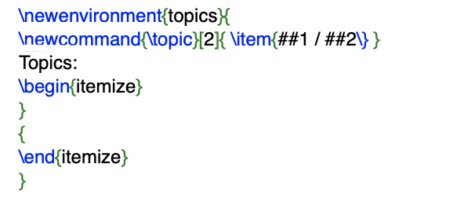

Latex Packages
New environment
Just as with the \newcommand command, there is a command to create your own environments.
The \newenvironment command uses the following syntax:
How to create a new environment
Again \newenvironment can have an optional argument. When the \begin{name} command (which starts the environment) is encountered,
the material specified in the before argument is processed before the text in the environment gets processed.
The material in the after argument gets processed when the \end{name} command (which ends the environment) is encountered.
The optional num and default arguments are used the same way as in the \newcommand command.
LaTeX makes sure that you do not define an environment that already exists.
If you ever want to change an existing environment, you can use the \renewenvironment command.
It uses the same syntax as the \newenvironment command.
The example below illustrates the usage of the \newenvironment command:
Extra Space
When creating a new environment you may easily get bitten by extra spaces creeping in,
which can potentially have fatal effects.
One example is when you want to create a title environment which suppresses its own indentation as well as the one on the following paragraph.
The \ignorespaces command in the begin block of the environment will make it ignore any space after executing the begin block.
The end block is a bit more tricky as special processing occurs at the end of an environment.
With the \ignorespacesafterend LaTeX will issue an \ignorespaces after the special ‘end’ processing has occurred.
or you can do it in this way!

New commands within new environment
New commands can be declared within newenvironment.
Commands declared within the newenvironment refer to their arguments by doubling the # character.
In the following example, a new environment is declared along with a nested command:
